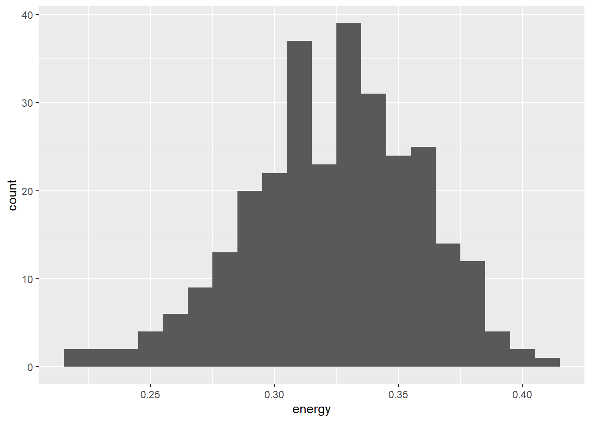
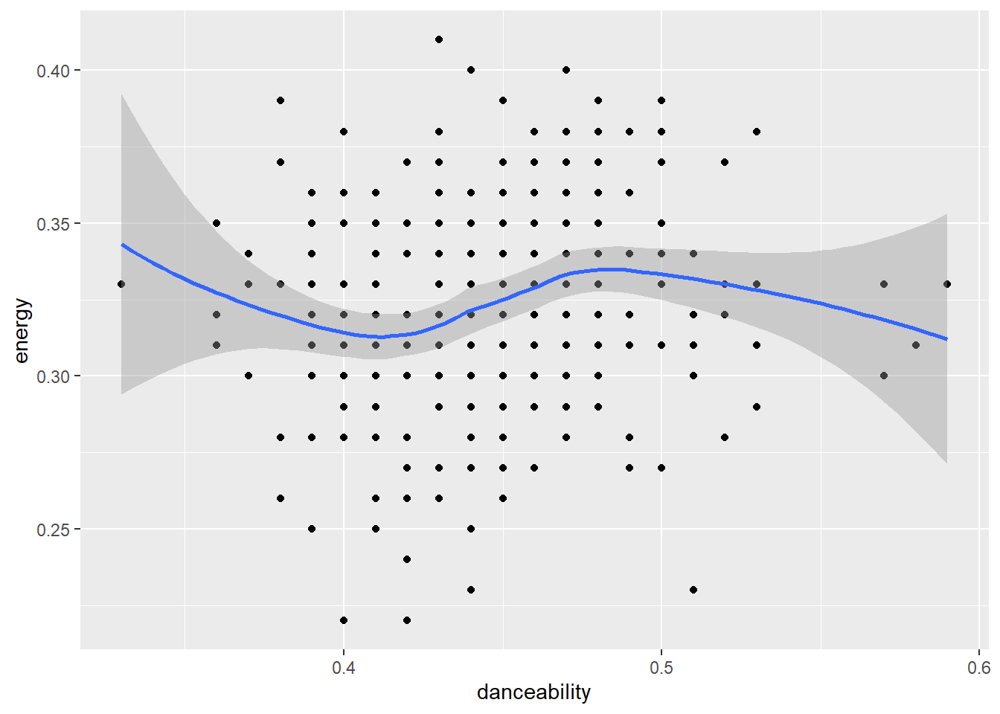
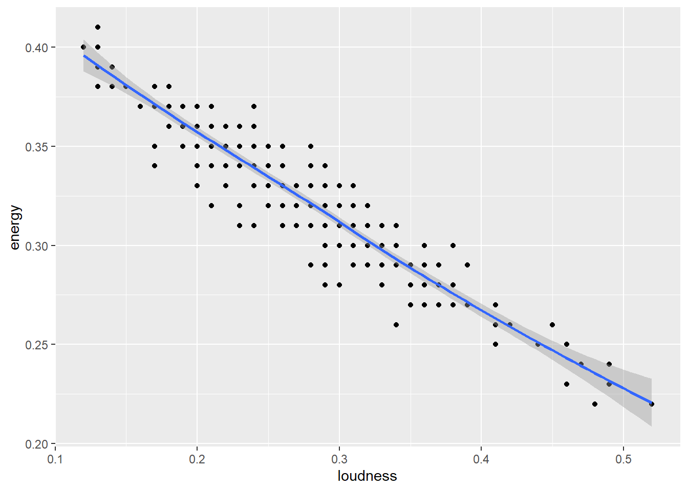
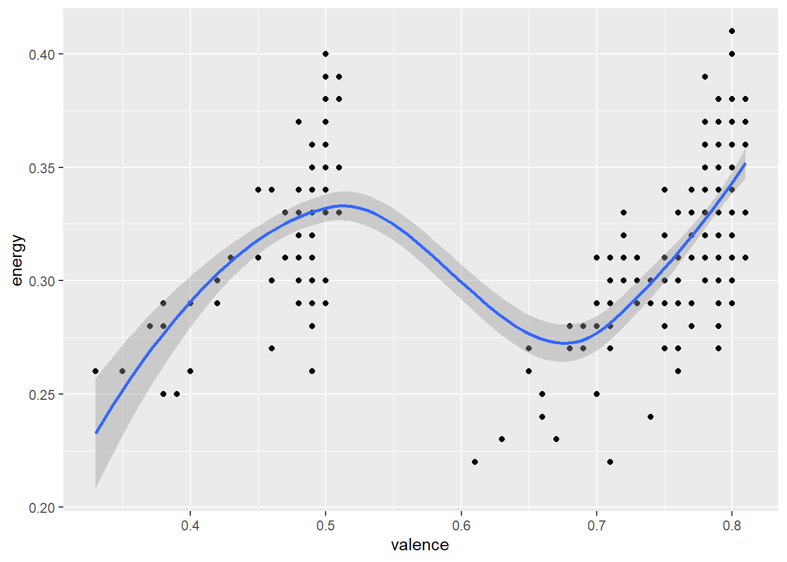
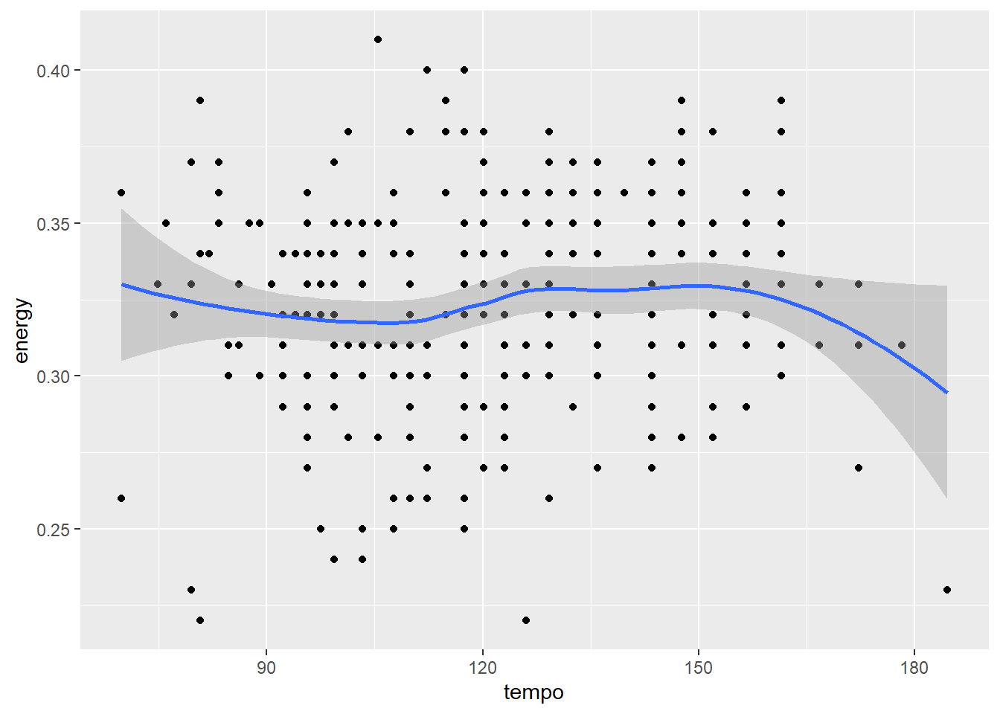
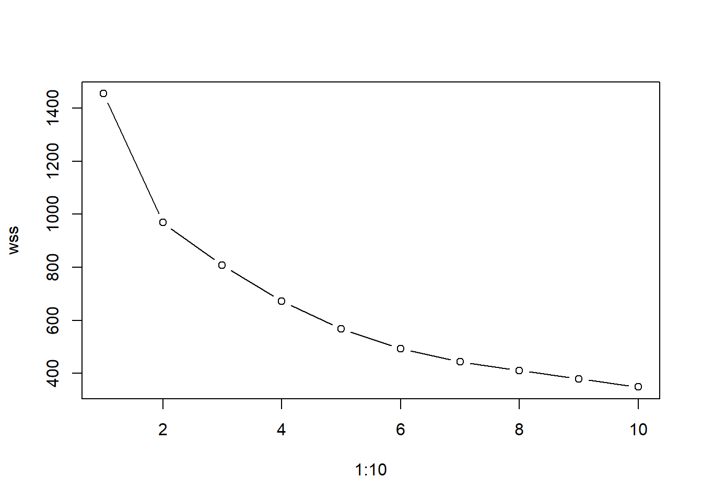
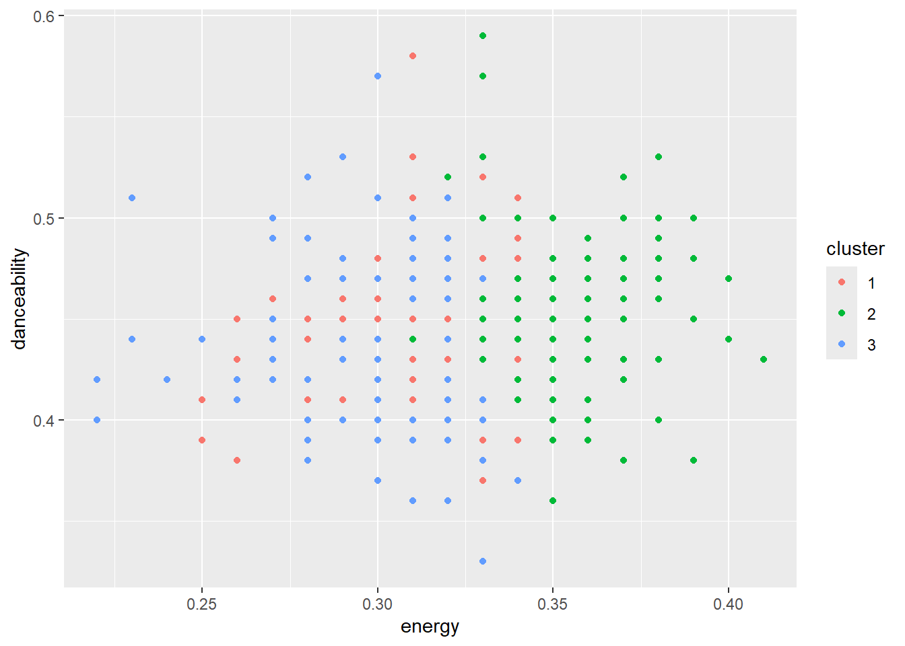

library(here)
library(readr)
library(dplyr)
library(ggplot2)
library(rsample)
library(taylor)
library(magrittr)
library(tidyr)Taylor Swift Song Analysis
Introduction
The purpose of this project is to explore and model characteristics of songs using statistical learning techniques. The dataset used in this analysis comes from the taylor package in R and contains audio-related variables describing songs by Taylor Swift. These variables include measures such as energy, danceability, loudness, acousticness, valence, and tempo.
Motivation and Context
The main goal of the analysis is to investigate relationships between song characteristics and determine which variables are most strongly associated with energy. In addition, both supervised and unsupervised learning methods are used to identify patterns in the data and evaluate predictive models.
The project includes exploratory data analysis, k-means clustering, linear regression, and k-nearest neighbors (KNN) regression. Cross-validation and hyperparameter tuning are also used to evaluate model performance.
Packages Used In This Analysis
| Package | Use |
|---|---|
| here | to easily load and save data |
| readr | to import the CSV file data |
| dplyr | to massage and summarize data |
| rsample | to split data into training and test sets |
| ggplot2 | to create nice-looking and informative graphs |
| taylor | Taylor Swift Dataset |
| magrittr | |
| tidyr |
Data Description
taylor <- taylor_all_songs
nrow(taylor)[1] 384ncol(taylor)[1] 26set.seed(1031)
split <- initial_split(taylor, prop = 0.8)
taylor_train <- training(split)
taylor_test <- testing(split)The dataset I used comes from the taylor package in R. Within the taylor package in R are three datasets being of all of taylor’s songs, albums, and songs ordered into its respective album. For this project the dataset being used would just be all of taylor’s songs. Each observation represents a song, and the variables describe measurable audio features. These variables include energy, danceability, loudness, acousticness, valence, and tempo.
The response variable selected for this project is energy, which measures the intensity and activity level of a song. Predictor variables were chosen based on their potential relationships with energy and their usefulness in exploratory analysis and modeling.
The dataset was randomly divided into training and testing sets, with approximately 80% of the observations assigned to the training set and 20% assigned to the testing set. Rows with missing values were removed before performing clustering and supervised learning analyses.
Exploratory Data Analysis
ggplot(taylor_train, aes(x = energy)) +
geom_histogram(bins = 20)
ggplot(taylor_train, aes(x = danceability, y = energy)) +
geom_point() +
geom_smooth()
ggplot(taylor_train, aes(x = loudness, y = energy)) +
geom_point() +
geom_smooth()
Initially I wanted to explore how the song characteristics relate to the songs popularity but unfortunately there was no popularity varible in the dataset provided and I did not be able to find the spotify dataset to merge for popularity.
Then, in this section I explored how song characteristics relate to energy where it ranges from zero to one. Where to explain the scale into words from relax and calm to fast and loud music. The histogram of energy shows that values are spread across a somewhat wide range, indicating variation and varialbility in how many different types of songs Taylor Swift performs.
The scatterplot of energy versus dancibility (how suitible a song is for dancing) shows a weak and non linear relationship. Energy appears to decrease slightly at lower levels of danceability, then increase in the mid-range, and decrease again at higher values. This suggests that the relationship between danceability and energy is not strictly linear. The wide spread of points around the trend line indicates substantial variability, meaning that danceability alone is not a strong predictor of energy. It appears that additional variables may be needed to better explain variation in energy.
The scatterplot of loudness (perceived volume level) versus energy shows a strong negative linear relationship. As loudness increases, energy tends to decrease in a consistent and predictable manner. The points are closely clustered around the trend line, indicating a strong association between these variables. This suggests that loudness is a strong predictor of energy and will likely be an important variable in the predictive models.
ggplot(taylor_train, aes(x = valence, y = energy)) +
geom_point() +
geom_smooth()
ggplot(taylor_train, aes(x = tempo, y = energy)) +
geom_point() +
geom_smooth()
After exploring the basic distributions of the variables, I wondered, Which song characteristics are most strongly associated with energy? This question is important because energy represents how intense or dynamic a song feels, and understanding what influences it can help identify key features that drive musical style.
The relationship between danceability and energy appears weak and slightly nonlinear. Energy decreases slightly at lower levels of danceability, increases in the mid-range, and then levels off. The wide spread of points around the trend line suggests that danceability alone does not strongly predict energy.
The relationship between valence (music “positiveness”) and energy appears nonlinear. Energy increases initially with valence, then decreases in the middle range, and rises again at higher values. This curved pattern suggests a more complex relationship that may not be well captured by a simple linear model.
The relationship between tempo and energy appears relatively weak. The smooth trend line is fairly flat with only slight variation, and the points are widely scattered. This suggests that tempo does not strongly influence energy compared to the other variables.
In contrast, the relationship between loudness and energy is much stronger and more clearly linear. As loudness increases, energy decreases consistently, and the points are tightly clustered around the fitted line. This indicates that loudness is likely an important predictor of energy.
These results suggest that loudness is the strongest predictor of energy, while danceability and tempo have weaker relationships. Valence shows a nonlinear pattern, indicating that more flexible modeling approaches may be useful. These findings help guide the selection of models and predictors in the next section.
Modeling
train_model <- taylor_train %>%
select(energy, danceability, loudness, acousticness, valence) %>%
drop_na()
scaled_features <- scale(train_model)
# Elbow method
wss <- sapply(1:10, function(k) {
kmeans(scaled_features, centers = k, nstart = 10)$tot.withinss
})
plot(1:10, wss, type = "b")
set.seed(123)
kfit <- kmeans(scaled_features, centers = 3, nstart = 10)
train_model$cluster <- as.factor(kfit$cluster)
ggplot(train_model, aes(x = energy, y = danceability, color = cluster)) +
geom_point()
In this section, I applied k-means clustering to group songs based on their audio characteristics. The variables used for clustering were energy, danceability, loudness, acousticness, and valence. Prior to clustering, rows with missing values were removed and the variables were standardized so that each feature contributed equally to the analysis.
K-means clustering works by dividing the data into a fixed number of clusters. The algorithm begins by selecting k cluster centers assigning each observation to the nearest center. It then updates the cluster centers based on the average of the assigned points. This process repeats until the cluster assignments no longer change. The goal is to minimize the within-cluster sum of squares (WSS), which measures how similar observations are within each cluster.
To determine the appropriate number of clusters, I used the elbow method. The plot of WSS versus the number of clusters shows a sharp decrease from k = 1 to k = 3, after which the rate of decrease slows down. This indicates that adding more clusters beyond k = 3 does not substantially improve the clustering. Therefore, I selected k = 3 clusters.
The clustering results are shown in the scatterplot of energy versus danceability, with points colored by cluster. The clusters represent groups of songs with similar characteristics. For example, one cluster contains songs with higher energy and moderate danceability, while another cluster contains songs with lower energy levels. A third cluster appears to capture songs with intermediate values.
The clusters reflect meaningful groupings of songs based on their audio features. These groupings suggest that songs can be categorized into distinct styles or profiles based on combinations of energy, danceability, and related variables.
Conclusion
This project improved ever so slightly my understanding of statistical learning methods and how they can be applied to real-world data. Through exploratory data analysis, I learned how visualizations help identify relationships between variables and guide model selection.
The unsupervised learning portion demonstrated how k-means clustering can group songs with similar characteristics, while the supervised learning section showed how different models can be used to predict energy. I also gained a better understanding of hyperparameter tuning and the bias-variance tradeoff in KNN models.
In addition, this project provided practical experience with data cleaning, handling missing values, scaling variables, and troubleshooting coding errors. Overall, the project helped strengthen my understanding of both statistical learning techniques and their application to music-related data.
Limitations and Future Work
One limitation of this analysis is that the models were built using a small number of predictor variables. Although variables such as loudness, danceability, acousticness, and valence were useful for predicting energy, there are many additional factors that influence a song’s characteristics that were not included in the dataset. Because of this, some songs may be predicted less accurately than others, particularly songs with unusual musical styles or combinations of features.
Another limitation is that some relationships observed during exploratory analysis appeared nonlinear, while the linear regression model assumes linear relationships between predictors and the response variable. Although the KNN model is more flexible, its performance depends heavily on the choice of k and the structure of the data. In addition, KNN can become sensitive to noise and less effective when observations are sparse.
Missing values also reduced the number of observations available for analysis because rows containing missing data had to be removed before modeling and clustering. Future analyses could explore methods for handling missing values more effectively, such as imputation techniques.
An additional area for future work would be expanding the dataset to include songs and not necessarily stick strictly to just Taylor Swift. Being able to explore different genres could work too. This would allow the models to capture a wider range of musical characteristics and improve generalizability. There is as I mentioned before comparing to not just energy but based on popularity as it can be more easily understandable as to why/how a song is more popular than others.
There are also some ethical considerations related to music data analysis. Audio features are often generated automatically using proprietary algorithms, and the exact methods used to calculate these features may not always be transparent. In real-world applications, predictive models based on music data could influence recommendation systems or marketing decisions, which may unintentionally favor certain musical styles or artists over others.